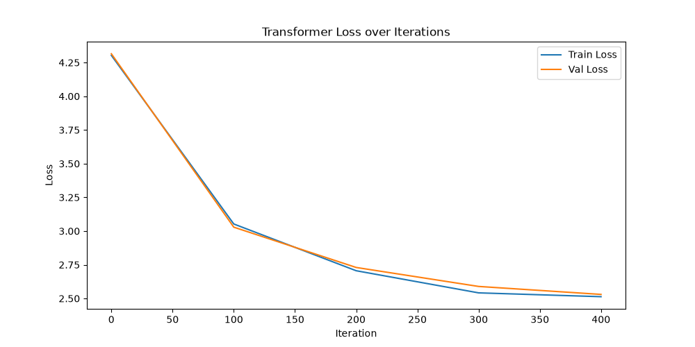

Methodology
I built a miniature character-level Transformer using PyTorch and trained it on the "Tiny Shakespeare" dataset. The architecture includes token and positional embeddings, multi-head causal self-attention blocks, and feed-forward networks.
- Context Block Size: 8 tokens
- Embedding Dimension: 32
- Attention Heads: 4
- Layers: 3
- Optimizer: AdamW (lr=1e-3)
Results
The model was trained for 500 iterations. Below is the learning curve showing the training and validation loss decreasing, indicating that the network successfully learned the underlying character distribution.

After a short training period, the model generates the following raw character output. While it isn't perfect English, the model has clearly learned word boundaries, basic capitalization, and Shakespearean formatting:
Loading...
Conclusion
Even at a microscopic scale, the self-attention mechanism quickly captures temporal dependencies in sequences, proving the extreme effectiveness of the Transformer architecture.